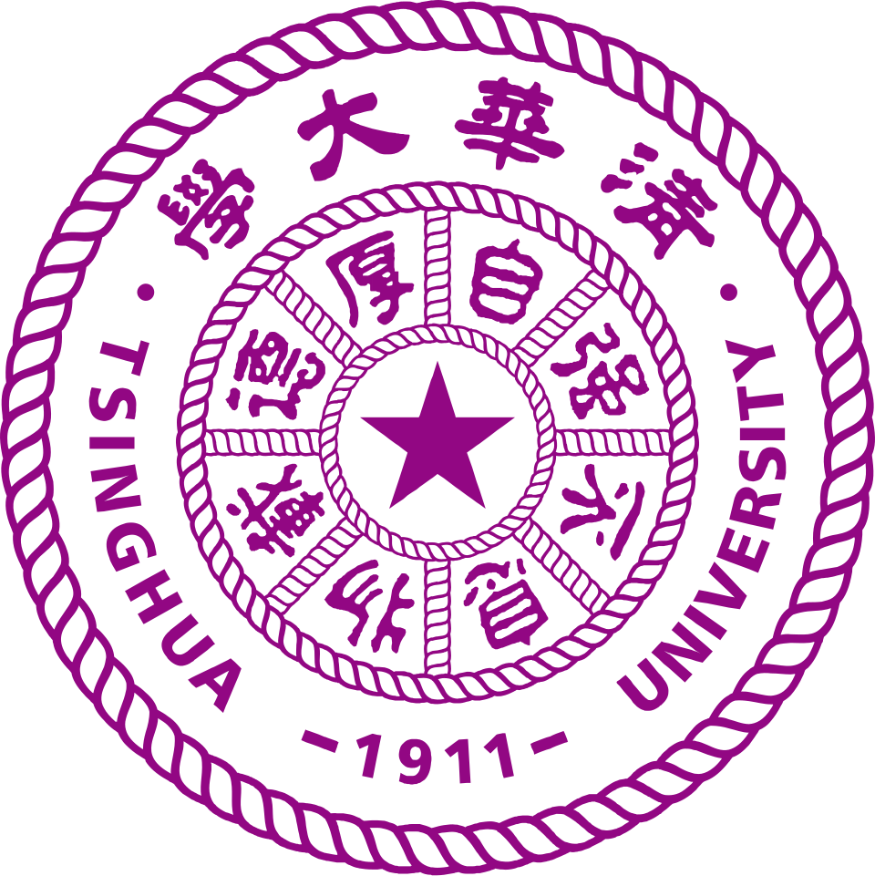
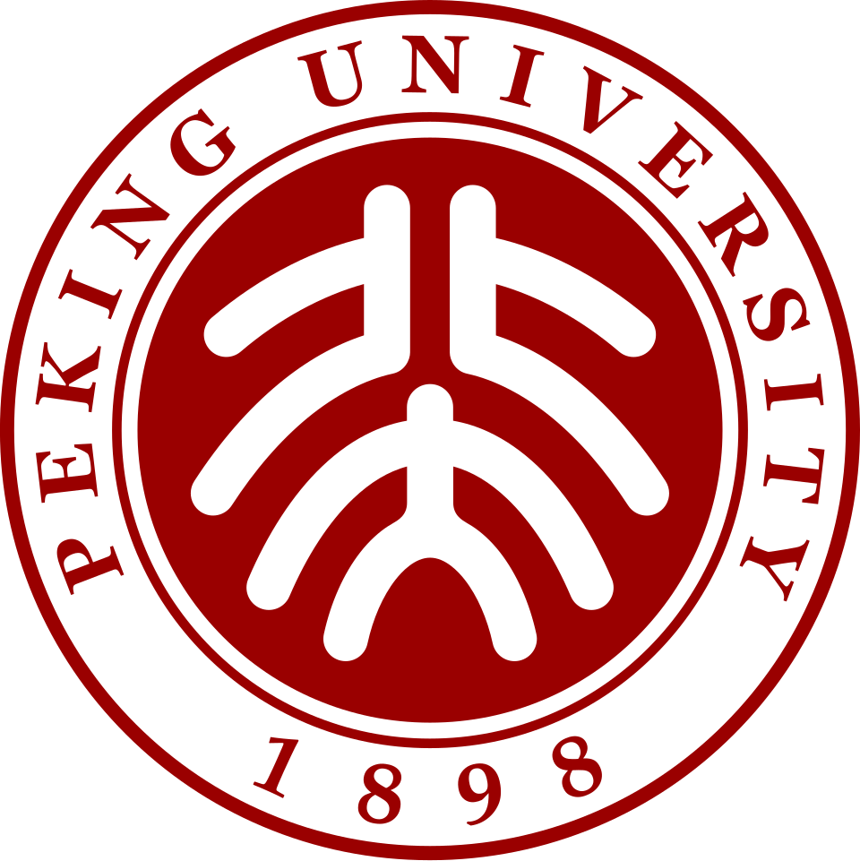

为什么选择中国
从院校匹配到签证过渡，全程陪伴你的中国求学之路
找到最适合你的中国大学
Find Your Perfect University Match in China
我们提供个性化指导，根据你的目标、资质和预算，帮助你在 3,000+ 所高校中找到最合适的中国大学与课程。凭借专家见解与全程支持，助你开启神州求学良机。

奖学金护航，留学无忧
Scholarships That Make It Possible
从中国政府奖学金到省市、校级奖学金，每年 40,000+ 名额，覆盖学费、住宿、生活费与医保。叠加申请，最高可全额覆盖——让经济不再成为求学的门槛。

安全宜居的多元家园
A Safe, Multicultural Home Away From Home
56 个民族、八大方言、南北风物千姿百态。中国城市治安全球领先，深夜出行无忧；移动支付、高铁地铁触手可及。于山河间读懂中国，让留学生活便捷安心。
通向全球的职业跳板
Your Global Career Springboard
"一带一路"联通 150+ 国家，中资企业出海需要大量懂中文、通中外的人才。掌握中文，即掌握打开 14 亿人口市场的钥匙——在华留学是你的金色通行证。
中国高等教育体系
从 985 到双一流，三级金字塔筑就学术高地
985 工程
1998 年 5 月由教育部启动，遴选 39 所顶尖研究型大学，旨在建设世界一流学府。清华、北大、复旦、上交、浙大、中科大等皆列其中，代表中国高等教育最高水准。
211 工程
1995 年启动，面向 21 世纪重点建设 115 所高等学校和一批重点学科，覆盖各省龙头高校，是 985 之外的国家重点建设序列。
一
流
双一流建设
2017 年启动的新时代战略，统筹推进世界一流大学与一流学科建设，147 所高校、465 个学科入选。2022 年启动新一轮建设，取代 985/211 成为新时代建设框架。
奖学金体系 · 四重护航
从国家到学校，层层覆盖，让留学之路无忧
中国政府奖学金
- 全额覆盖学费、住宿、生活费、医保
- 本科生 ¥2,500/月 · 硕士 ¥3,000/月 · 博士 ¥3,500/月
- 经中国驻外使领馆或 CSC 网申
- 每年 40,000+ 名额，覆盖 180+ 国家
孔子学院奖学金
- 面向国际中文教师与汉语学习者
- 资助汉语国际教育硕士、汉语本科等
- 需 HSK 成绩，经海外孔子学院推荐
- 含学费、住宿、生活费与一次性安置费
省市奖学金
- 北京、上海、江苏、广东等多省设立
- 奖励在本地高校就读的优秀留学生
- 部分省份全额资助，部分按学历分档
- 与国家级奖学金可形成补充组合
校级奖学金
- 由各高校自主设立、自主评审
- 清华、北大、复旦等名校均有专属项目
- 覆盖全额、半额、新生奖、学业奖
- 申请窗口与录取通知同步开放
文化体验 · 触摸东方
长城故宫、园林功夫、茶道书法，于山河间读懂中国
留学生活 · 衣食住行
从宿舍到餐桌，从地铁到医保，生活无忧方能学有所成
住宿
多数高校为留学生提供专门公寓，双人间、单人间可选，月租 ¥400–¥2,000。配备空调、独立卫浴、共用厨房，部分院校可申请校外住宿补贴。
餐饮
校园食堂菜式丰富，一餐 ¥10–¥25 即可吃饱。清真窗口、素食窗口、西餐窗口一应俱全，外卖平台 24 小时配送，南北风味触手可及。
交通
地铁、公交、共享单车三网合一，月均通勤支出 ¥200 内。高铁联通全国主要城市，留学生凭学生证可享部分景区与交通优惠。
医保
留学生需购买综合医疗保险（约 ¥800/年），覆盖门诊、住院、意外伤害。校内设医务室，三甲医院遍布各城，就医便捷。